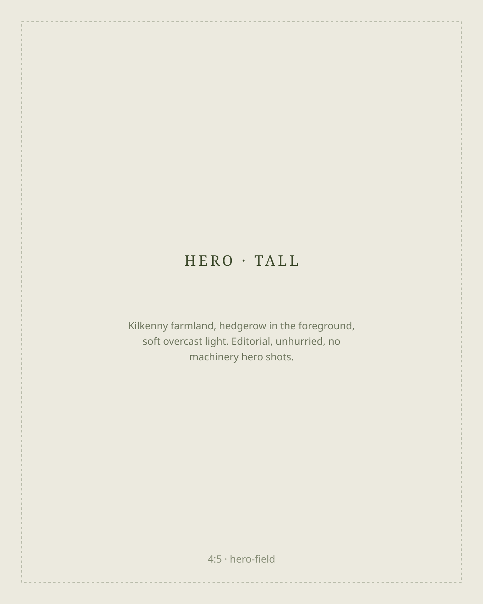
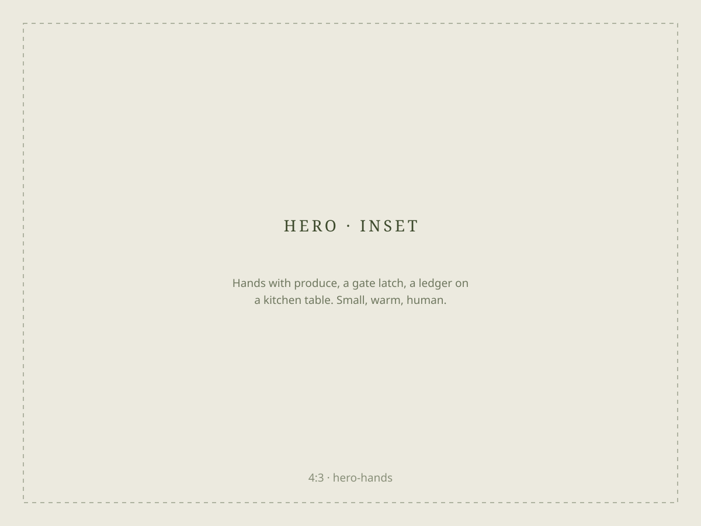
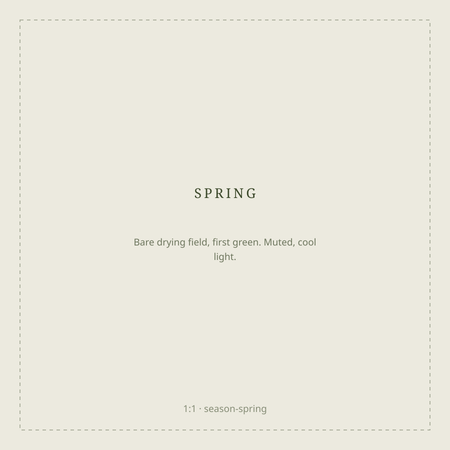
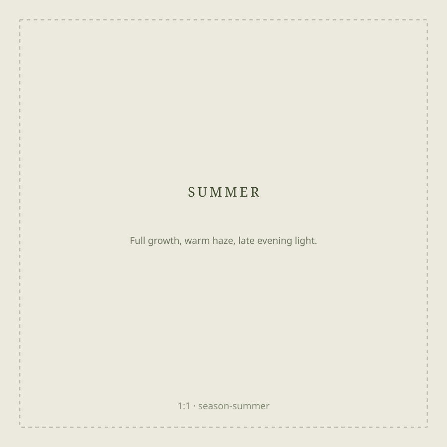
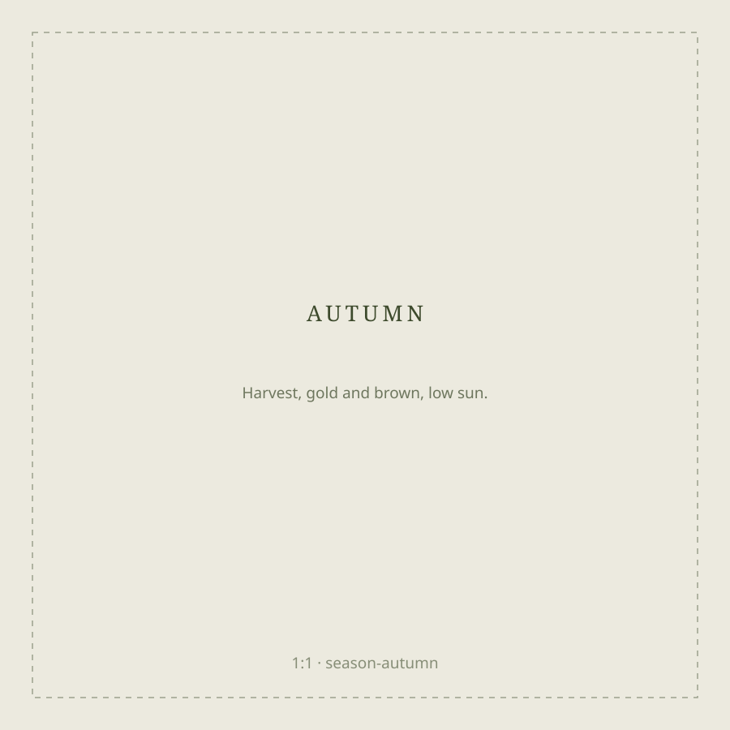
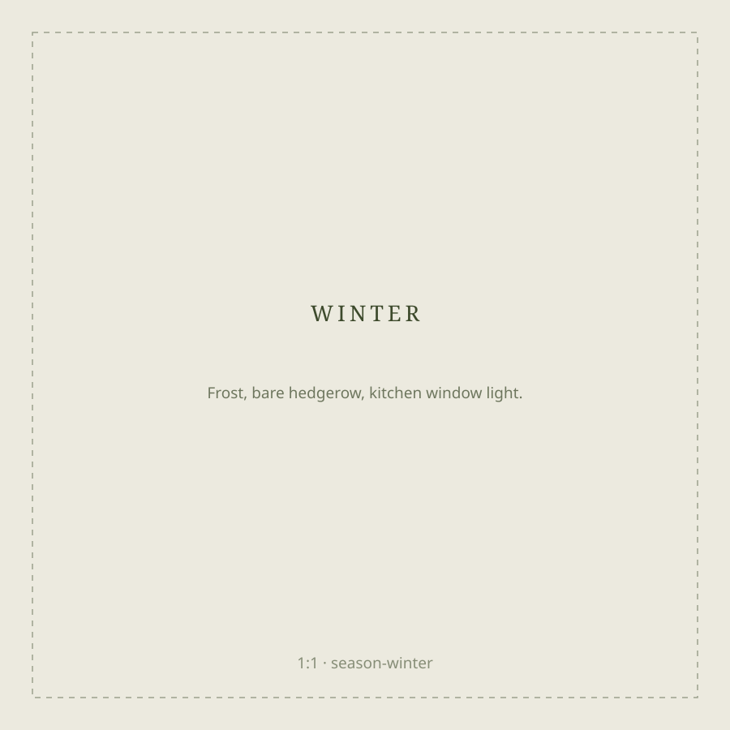
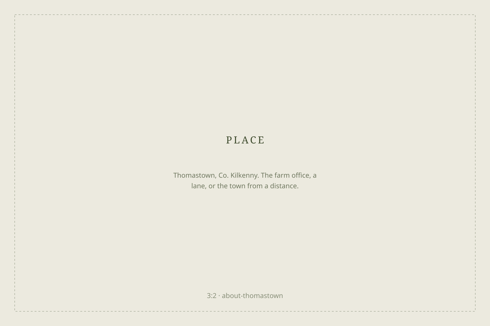

Steady books for seasonal businesses.
Hedgerow Accounting looks after the numbers for farms, food producers and rural enterprises: businesses where income arrives with the seasons, and the accounts have to make sense of it.
4.9 from 80+ farm and food clients across the south-east


Four kinds of client, one way of working
Pick the one that sounds like you.
Farm accounts
Farming is the original seasonal business: money out all spring, money in twice a year. We keep the books straight through all of it, so decisions about stock, land and machinery are made on real numbers.
- Annual farm accounts and income tax
- VAT: registered and flat-rate
- Herd, machinery and land records tied to the books
- Farm payments accounted for correctly
- Succession conversations, started early
Food & drink producers
Cheesemakers, bakers, brewers, growers selling at markets and into shops. Margins are tight and stock ties up cash, so we make sure you can see both clearly.
- Bookkeeping and VAT for producers
- Costing and margin per product line
- Payroll for production teams
- Stock and cash-flow visibility
- Grant and funding paperwork support
Rural trades & tourism
Agri-contractors, farriers, glamping sites, B&Bs and the businesses that keep the countryside working. Busy seasons, quiet seasons: the accounts should expect both.
- Accounts and tax for sole traders and companies
- Seasonal cash-flow planning
- Payroll for seasonal staff
- VAT across mixed activities
- Equipment and vehicle decisions, costed
Personal tax
For landowners, directors and families with a few things going on: rental income, a share of the farm, an off-farm job. One return, everything in its right place.
- Income tax returns, filed on time
- Rental income accounts
- Capital taxes when land or assets change hands
- One clear picture across the household
The year, handled

Year-end accounts drafted while the fields are still drying out. You see last year clearly before this one takes over.

A mid-year look at the numbers: what the busy season needs to earn, and what it is safe to spend.

Tax deadline season. Returns filed early, liabilities known well in advance, and no envelopes you are afraid to open.

Planning at the kitchen table: next year's budget, the big purchases, and the conversations worth having early.
“A good year and a bad year should both arrive as information, never as a surprise.”
How we think about the work
From a farm office in Thomastown
Hedgerow Accounting works from Thomastown, Co. Kilkenny, for clients across the south-east. The practice was built around one observation: most accountancy is designed for businesses with twelve even months, and most of our clients don't have one of those.
So we work the way the land works: around the seasons, in plain language, with the kettle on. Site visits are normal here; you shouldn't have to leave the farm to see your accountant.

Tell us what you're working with
A first conversation costs nothing, and we'll come to you.
- First visit is free
- We come to the farm
- Plain language, no jargon